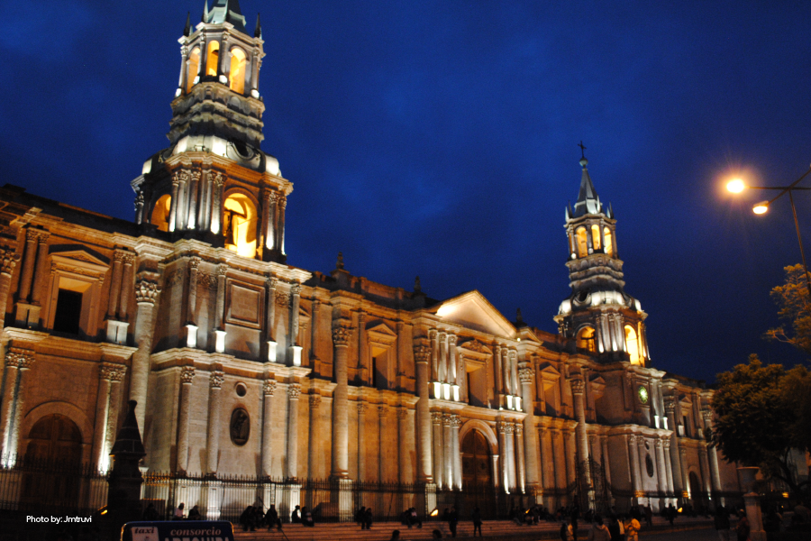
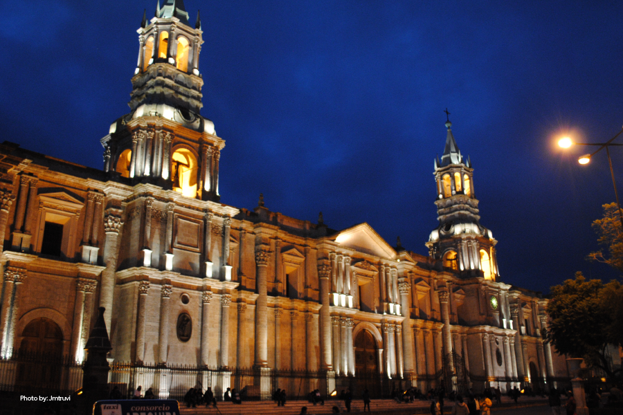
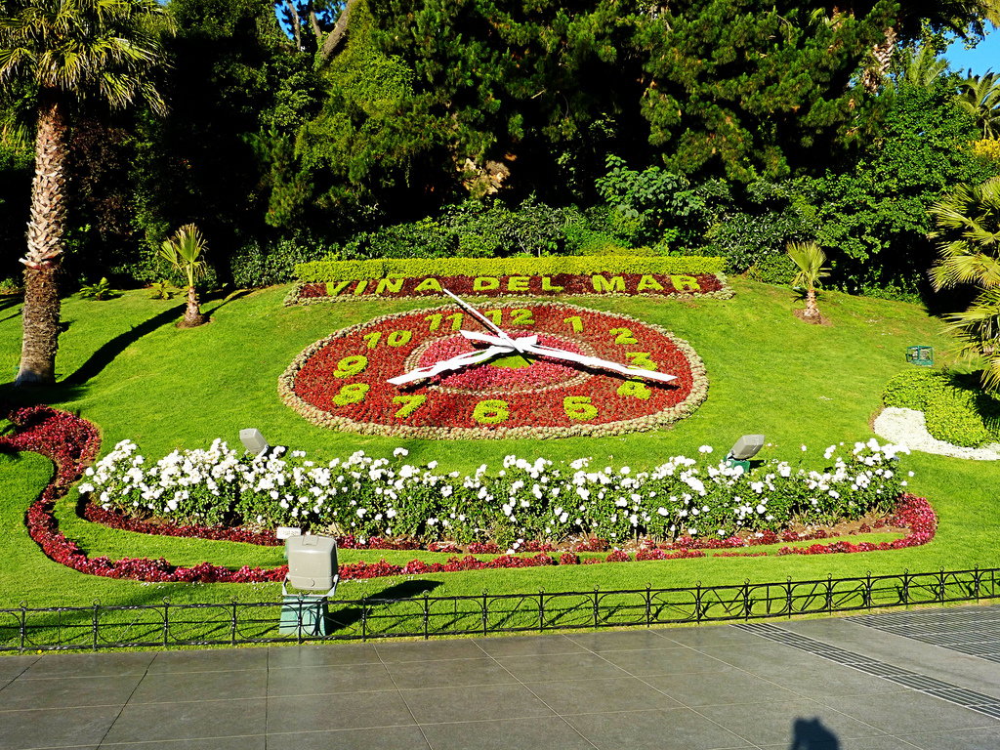
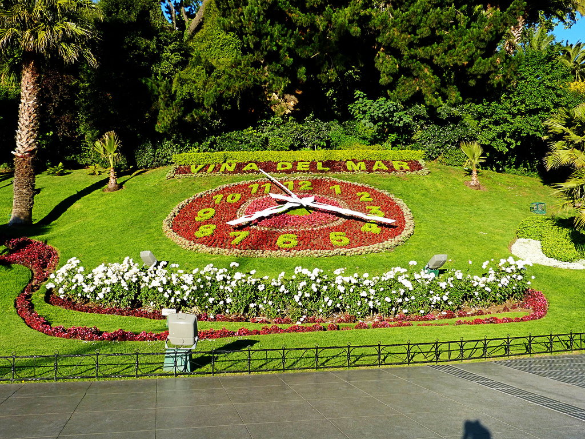

Colombia-Santa Marta-Medellin
If there were ever a country that suffered from a case of seriously bad press,
it's Colombia. It's not well known by travellers, so the border feels like crossing one of the last
frontiers of travel. Colombia is ripe for discovery, and there is a little of everything: green valleys,
golden beaches and snow-capped mountains, colonial fortresses and Bogota's frenetic energy...
everything, it seems, except tourists.
Price: $2399.00
Peru-Machu Pichu-Cuzco
Cradle to the vast Incan Empire, the largest in pre-Colombian America, Peru's power
and gold attracted the Spanish conquistadors who used it to fund their own vast empire in the Americas.
As a result, colonial gems like magnificent Cusco were built on Incan foundations, making for a fascinating hybrid culture.
Price: $1899.00

 



Brazil-Rio de Janeiro-Sao Paolo
Sensuality, dancing, and partying: it seems the Brazilians have made a science
of all that is fun in life. The world champions of hedonism were no doubt aided by a lush land and
steamy climate, but still there is something different about Brazilians. For one, they are the most
diverse country in Latin America, not to mention the continent's only former Portuguese colony.
Price: $2199.00
Chile-Viña del Mar-Santiago
Encompassing a narrow strip of land between the Pacific Ocean and the high peaks
of the Andes, Chile includes the driest desert, the Atacama in the north, the agriculturally-rich Central
Valley, snow-covered volcanoes, forests and tranquil lakes of the near south, and the wild and windswept
glaciers and fjords of the far south.
Price: $1799.00
 



Argentina-Buenos Aires
It has become cliché to say that Argentina is as much European as it is Latin;
yet to arrive in Buenos Aires and discover this is actually true still surprises.
With the Patagonian Andes as its glacial backbone, Argentina is a land of extreme wilderness,
while its vast pampas are still home to roaming gauchos.
Price: $2099.00
Ecuador-Quito-Galapagos
Compact and diverse, Ecuador is like a tasting menu for South America.
There are Andean mountains, complete with glacial volcanoes.At Otavalo, site of the largest
market in South America, Ecuador's numerous Indigenous groups come to barter for both crafts
and staples. There are Amazonian jungles and charming colonial cities, like cobblestoned
Cuenca.
Price: $1399.00